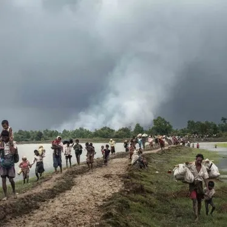

মিয়ানমারের রাখাইন রাজ্যের মুসলিম সম্প্রদায়ের মানুষরাই নির্যাতিত।
মিয়ানমারের রাখাইন রাজ্যের (ঐতিহাসিকভাবে আরাকান নামে পরিচিত) নিপীড়িত মুসলিম সংখ্যালঘু রোহিঙ্গারা নিয়মতান্ত্রিক নির্যাতনের মুখোমুখি হয়েছে।
তীব্র সহিংসতা এবং রাষ্ট্রীয় পৃষ্ঠপোষকতায় বৈষম্যের শিকার হয়ে তাদের রাষ্ট্রহীন করা হয়েছে। এই নির্যাতনের ফলে লক্ষ লক্ষ মানুষ তাদের ঘরবাড়ি ছেড়ে
পালিয়ে যেতে বাধ্য হয়েছে, যার ফলে তারা বাংলাদেশের মতো প্রতিবেশী দেশে আশ্রয় নিতে একটি বড় মানবিক সংকটের মুখোমুখি হয়েছে। তারা এখনও
বিশ্বের সবচেয়ে নির্যাতিত জনগোষ্ঠীর মধ্যে একটি।
মিয়ানমারের রাখাইন রাজ্যের মুসলিম সম্প্রদায়, যা বিশ্বজুড়ে **রোহিঙ্গা** নামে পরিচিত, তারাই মূলত নির্যাতিত। মিয়ানমারের সামরিক বাহিনী এবং কিছু
উগ্র বৌদ্ধ জাতীয়তাবাদী গোষ্ঠীর হাতে তারা দীর্ঘদিন ধরে জাতিগত নির্মূল ও বর্বর সহিংসতার শিকার। ১৯৮২ সালের নাগরিকত্ব আইন তাদের রাষ্ট্রহীন করে
দিয়েছে, কেড়ে নিয়েছে সকল মৌলিক অধিকার। ২০১৭ সালে সামরিক অভিযানের মুখে সাত লক্ষাধিক রোহিঙ্গা নিজেদের ভিটেমাটি ছেড়ে জীবন বাঁচাতে
প্রতিবেশী বাংলাদেশে পালিয়ে যেতে বাধ্য হয়। আন্তর্জাতিক সম্প্রদায় এটিকে একটি ভয়াবহ মানবিক সংকট হিসেবে চিহ্নিত করেছে। তারা এখনো ন্যায়বিচার
ও নিজ দেশে ফেরার অপেক্ষায় রয়েছে।
মিয়ানমারের মুসলিম সম্প্রদায়ের উপর নির্যাতন করছে মূলত মিয়ানমারের সামরিক বাহিনী এবং কিছু বৌদ্ধ জাতীয়তাবাদী গোষ্ঠী।
রোহিঙ্গা মুসলমানদের ওপর নির্যাতনের পেছনে কয়েকটি জটিল কারণ রয়েছে। এর মূল কারণগুলো হলো:
### ১. নাগরিকত্ব অস্বীকার ও রাষ্ট্রহীনতা
১৯৮২ সালের মিয়ানমারের নাগরিকত্ব আইন অনুযায়ী, রোহিঙ্গাদেরকে দেশের ১৪০টিরও বেশি স্বীকৃত জাতিগোষ্ঠীর অন্তর্ভুক্ত করা হয়নি।
এর ফলে, তারা আইনিভাবে **রাষ্ট্রহীন** হয়ে পড়ে এবং তাদের সকল মৌলিক অধিকার, যেমন: শিক্ষা, স্বাস্থ্যসেবা, ও অবাধ চলাচলের
স্বাধীনতা কেড়ে নেওয়া হয়। এই আইনটি তাদের নিপীড়নের প্রধান আইনি ভিত্তি তৈরি করে।
### ২. জাতিগত ও ধর্মীয় বৈষম্য
মিয়ানমারে বহু শতাব্দী ধরে রোহিঙ্গা ও অন্যান্য জাতিগোষ্ঠীর মধ্যে উত্তেজনা বিদ্যমান। তবে, আধুনিককালে কিছু কট্টর বৌদ্ধ জাতীয়তাবাদী
গোষ্ঠী রোহিঙ্গাদেরকে অবৈধ অভিবাসী হিসেবে প্রচার করে, যা তাদের বিরুদ্ধে ঘৃণা ও বৈষম্যকে উসকে দেয়। এই গোষ্ঠীগুলো রোহিঙ্গাদেরকে
মিয়ানমারের **বৌদ্ধ পরিচয় ও সংস্কৃতি**র জন্য হুমকি হিসেবে তুলে ধরে।
### ৩. সামরিক বাহিনীর রাজনৈতিক ও অর্থনৈতিক স্বার্থ
মিয়ানমারের সামরিক বাহিনী (সেনাবাহিনী) দীর্ঘকাল ধরে রাজনৈতিক ক্ষমতা নিজেদের হাতে রাখার জন্য বিভিন্ন জাতিগোষ্ঠীর মধ্যে বিভেদ সৃষ্টি
করে আসছে। তারা রোহিঙ্গা সংকটকে ব্যবহার করে নিজেদের ক্ষমতা ও নিয়ন্ত্রণ ধরে রেখেছে। এছাড়া, রাখাইন রাজ্যের কৌশলগত অবস্থান এবং
অর্থনৈতিক গুরুত্ব, যেমন: গ্যাস ও অন্যান্য প্রাকৃতিক সম্পদ, এই ভূমি দখলের পেছনে একটি সম্ভাব্য কারণ হতে পারে।